Getting Started
Event Studio
A no-ABAP Fiori app for day-to-day integration administration – create cloud instances, activate outbound objects and adjust settings without back-end customizing. Designed for functional consultants and integration admins who don't write ABAP.
ASAPIO Event Studio is a web-based SAP UI5 application for configuring and managing event-driven integrations. It can connect to multiple SAP back-end systems simultaneously via SAP BTP destinations with principal propagation, and is deployed either on SAP BTP (Cloud Foundry) or directly on your ABAP server. The minimum ASAPIO version required is 9.32504 (SP11).
Overview
Event Studio runs as a standalone SAP UI5 application. Depending on your deployment choice, it is accessible from the SAP BTP Launchpad or directly via your ABAP server URL. All configuration changes made in Event Studio are written to the same ABAP customizing tables used by the classic transactions, keeping both interfaces in sync.
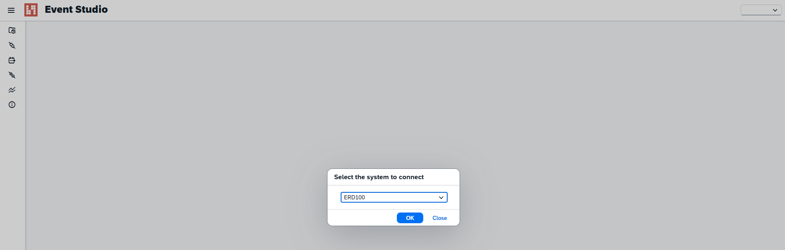
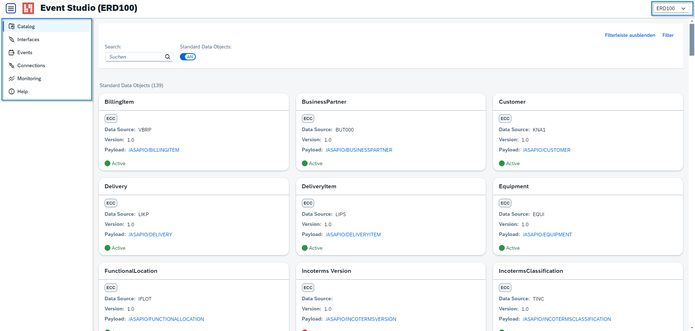
Event Studio is organized into the following pages:
| Page | Functionality |
|---|---|
| Data Catalog | Browse available standard and custom data objects; deploy events; view AsyncAPI schema |
| Interfaces | View, create, transport, and export AsyncAPI schema for existing interfaces |
| Events | List predefined events – add, update, or delete event definitions |
| Connections | View configured connections; edit connection settings via SAP GUI for HTML |
| Monitoring | Monitor system activity; filter by timestamp; view and download traces |
| Help | Links to documentation and guidelines |
Data Catalog
The Data Catalog page lists all available standard and custom data objects. Each object is shown as a tile with key details – Package, Object name, Event ID, and Domain. From a tile you can:
- Open the Details Page to inspect the object's full configuration and event list.
- Click the Deploy button to open the Deployment Page, where you select a target connector and activate the interface.
- Download the AsyncAPI schema for the selected data object.
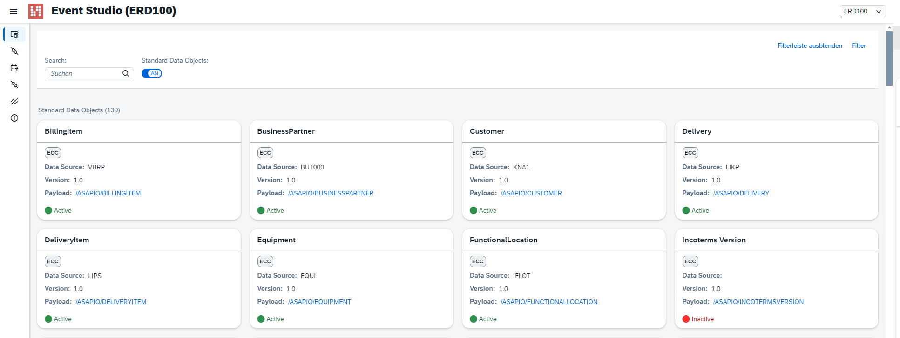
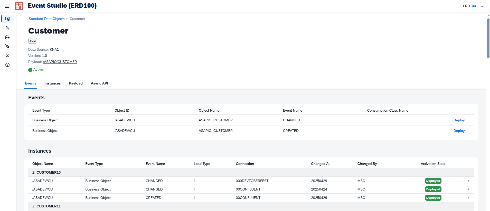
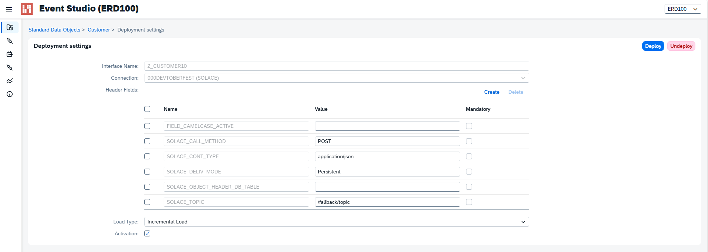
Interfaces
The Interfaces page shows all configured outbound integrations. Each row corresponds to an active interface between ASAPIO and a target connector. The toolbar provides:
- Create – set up a new interface step by step
- Transport – add selected interfaces to an ABAP transport request via the Transport Dialog
- AsyncAPI Schema – export the AsyncAPI specification for the selected interface
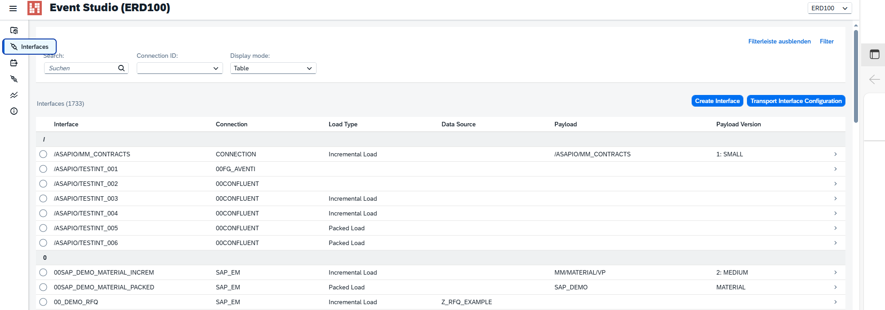
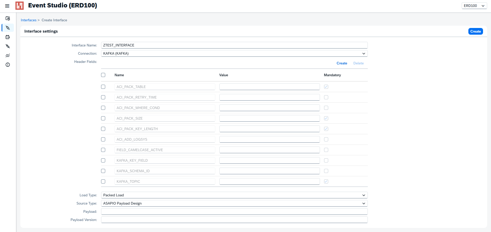
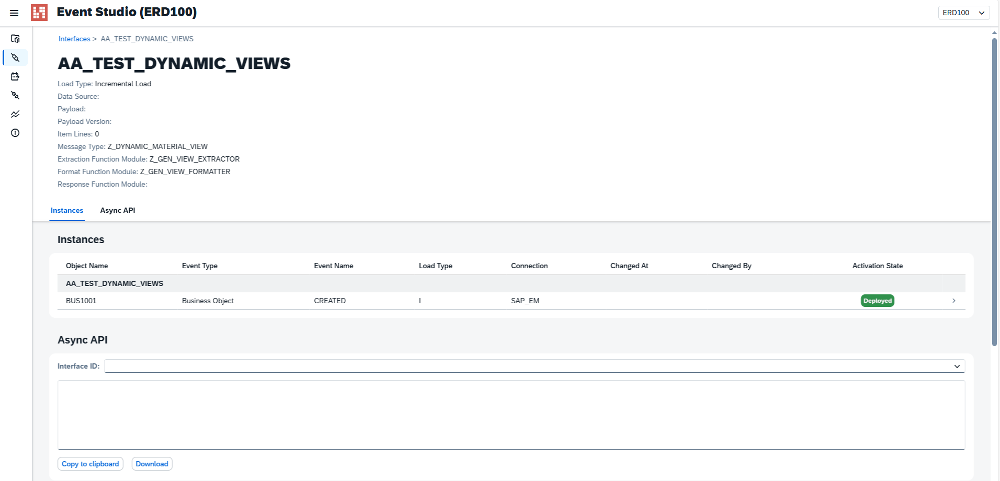
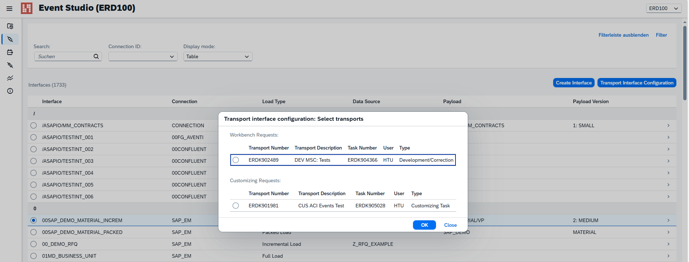
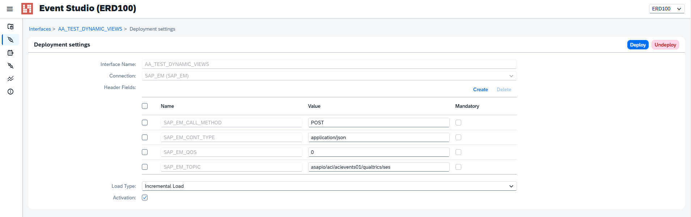
Events
The Events page lists all predefined events available for configuration. Use the Create button to add a custom event definition via the Add Event Dialog. You can also update or delete existing entries. When adding a custom event you specify:
- Event Type (e.g., RAP Event)
- Catalog Object ID and version (links to a Payload Designer view)
- Object ID and Event Name
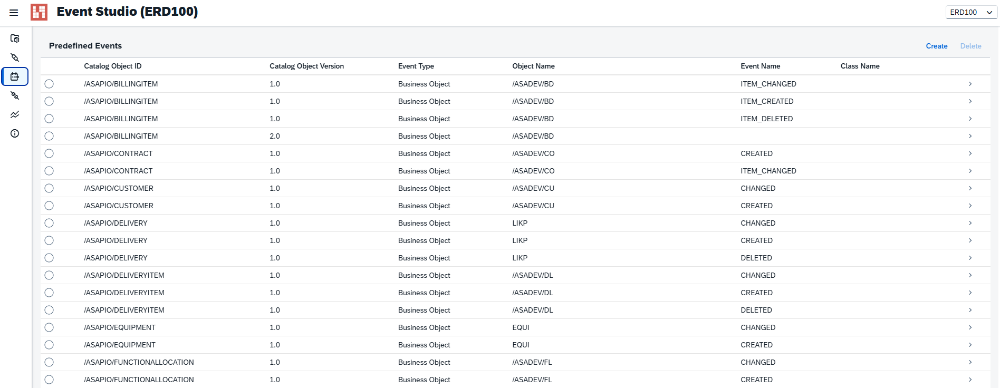
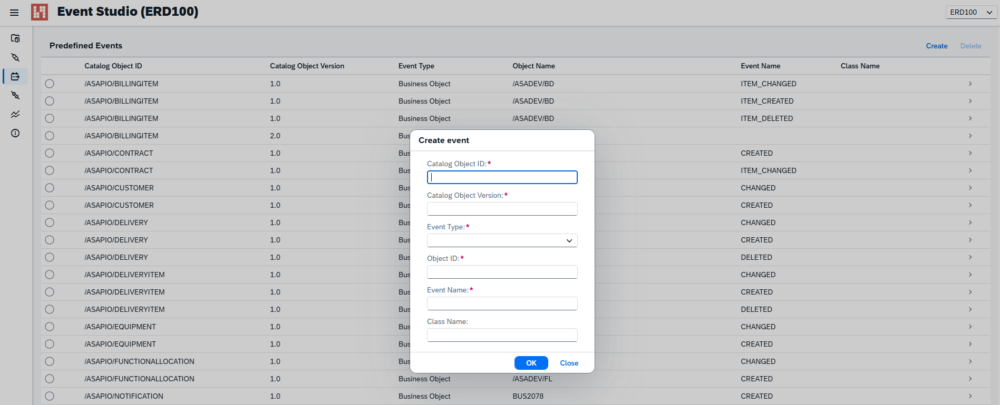
Connections
The Connections page displays all configured connector instances in a table. To edit the details of a connection, click the link in the table row – this opens the connection settings in SAP GUI for HTML, where you can update RFC destinations, header attributes, and other parameters.
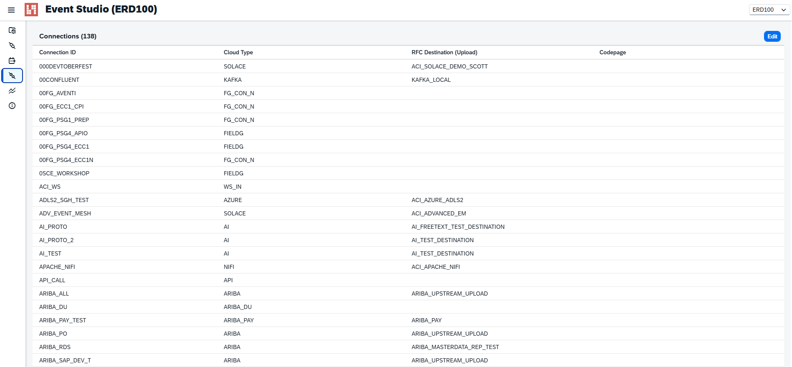
Monitoring
The Monitoring page lets you review system activity. Use the from/to timestamp filter to narrow the result set. The results table shows individual calls with status codes and timing information. Selecting a row expands the Traces section, where you can inspect the request and response payloads and download trace files.
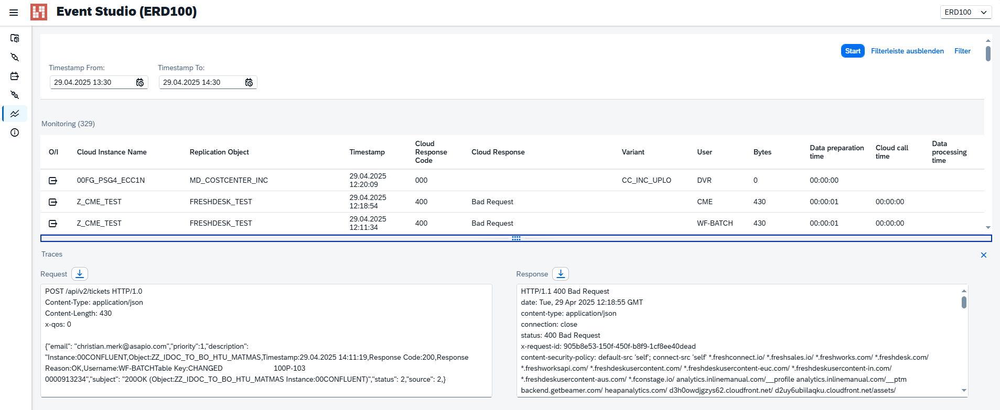
Help
The Help page provides direct links to the ASAPIO documentation and implementation guidelines.
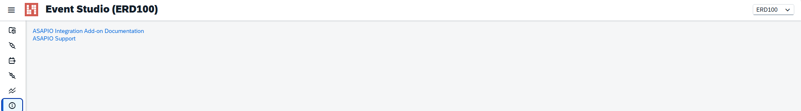
Deployment
Event Studio can be deployed in two ways – on SAP BTP (recommended) or directly on your ABAP application server.
Option A – SAP BTP via Business Application Studio
- Import the project archive
eventstudio.tarinto your BAS Dev Space. - Open a terminal in BAS and run
npm installto install dependencies. - Configure the application files:
ui5.yaml– UI5 tooling configurationxs-app.json– routing and destination configurationApp.controller.js– back-end connectivity settings
- Build and deploy the Multi-Target Application (MTA):
- Via BAS terminal:
cf deploy mta_archives/eventstudio_1.0.0.mtar - Or via BAS UI: right-click the
.mtarfile → Deploy MTA Archive
- Via BAS terminal:
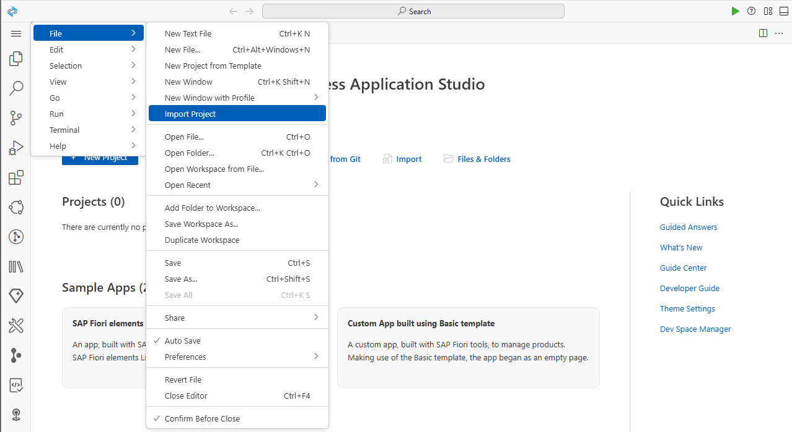
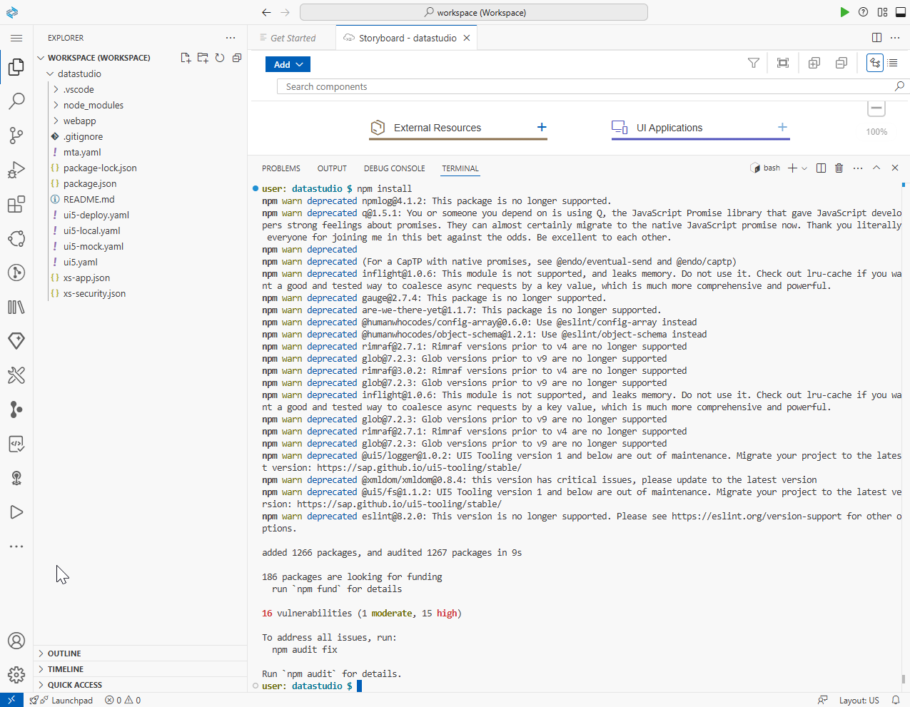
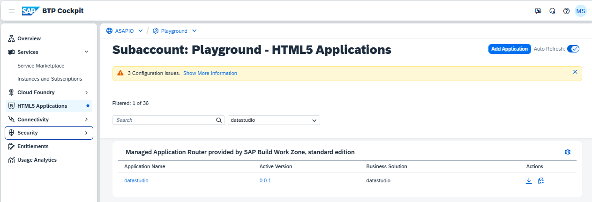
Option B – ABAP Application Server
- Import the Event Studio transport request into your ABAP system via STMS.
- Activate the OData service
/ASADEV/GW_CONFIG_API_SRVin transaction/IWFND/MAINT_SERVICE. - Activate the ICF node at path
default_host > sap > bc > bsp > asadev > app_uiin transaction SICF.
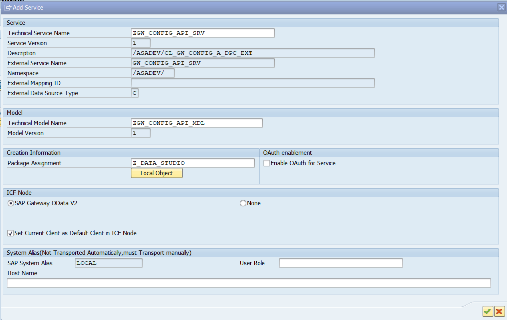
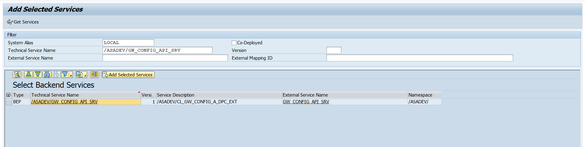
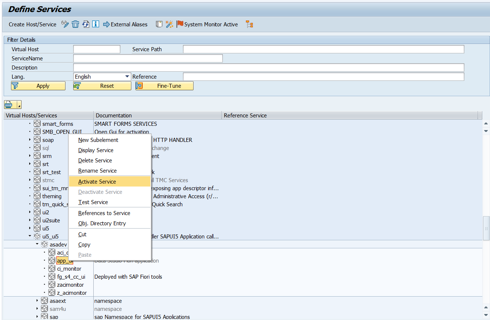
Optionally, you can configure Event Studio as an SAP Fiori Launchpad tile using transactions /UI2/FLPD_CUST or /UI2/FLPCM_CUST.